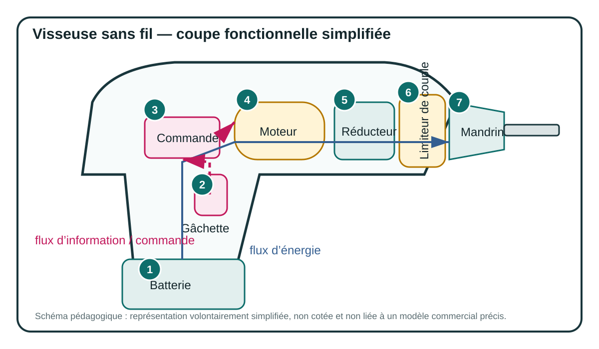

Analyse fonctionnelle & SysML · Séance 3 · 2 h
Que se passe-t-il à l’intérieur ?
Vous allez distinguer architecture, relations internes, chaîne d’énergie et chaîne d’information. Le défi : garder le lien avec les fonctions et exigences déjà identifiées.
Vous observez avant de nommer
Défi — Lire une coupe sans perdre le système

Cette vue est une représentation pédagogique fonctionnelle, pas un plan industriel coté.
1. Associez les numéros 1 à 7 aux fonctions suivantes : stocker l’énergie, acquérir une consigne, commander, convertir l’énergie, adapter vitesse/couple, limiter le couple, transmettre à l’outil.
2. Suivez le flux d’énergie depuis la batterie jusqu’à la vis. À chaque étape, dites ce qui change et ce qui reste transmis.
3. Suivez maintenant l’information depuis le geste de l’utilisateur jusqu’à la commande du moteur.
Diagramme 4 · BDD
De quoi le système est-il constitué ?
4. Qu’est-ce que le BDD vous apprend que la photo ne montre pas clairement ? Et qu’est-ce qu’il ne vous apprend pas encore ?
Diagramme 5 · IBD
Comment les blocs travaillent-ils ensemble ?
5. Il manque volontairement le dispositif d’inversion du sens de rotation. Quelle exigence devient impossible à tracer dans l’IBD ? Où ajouteriez-vous cette fonction ?
6. Expliquez en une phrase la différence entre BDD et IBD à quelqu’un qui les confond.
Sciences cognitives
Externaliser pour penser
Un bon schéma retire une partie du raisonnement de la mémoire de travail : les éléments et leurs relations restent visibles. Mais multiplier les représentations sans expliciter leur rôle peut provoquer l’effet inverse.
Quelle représentation vous a le plus aidé à raisonner : la photo, la coupe, le BDD ou l’IBD ? Qu’a-t-elle rendu visible ?
Comment éviteriez-vous l’effet de « double tâche » chez l’élève : comprendre le système ET apprendre simultanément toute la syntaxe graphique ?
Focale cognitive : segmentation, chunking, attention conjointe sur le fond et la représentation, retrait progressif de l’aide.
Votre scénarisation
Vous avez 55 minutes. Dans quel ordre utiliseriez-vous photo, objet réel, coupe, BDD et IBD ? Justifiez chaque transition.